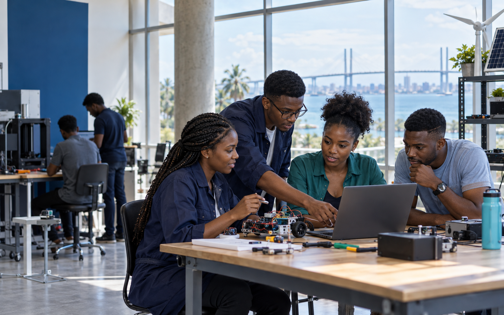
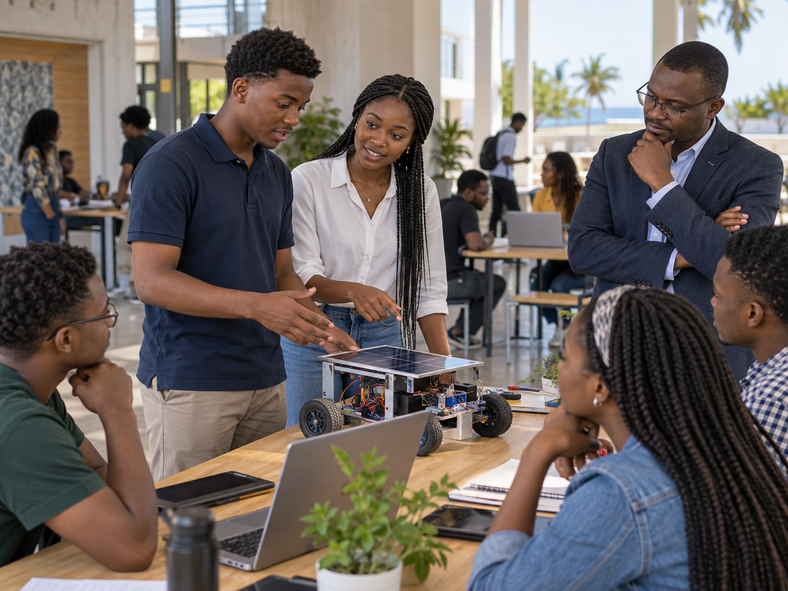

Missão
Dar acesso a uma educação exigente, inclusiva e relevante para Moçambique.
Uma experiência de ensino moderna, próxima e exigente — criada para transformar potencial em competências para a universidade, o trabalho e a vida.
Já é estudante? Aceder ao Portal
Dados demonstrativosRácio médio entre docente e estudantes, para uma aprendizagem mais próxima.
Formamos pessoas capazes de pensar, criar e agir. A nossa metodologia liga fundamentos sólidos a experiências práticas, tecnologia e acompanhamento contínuo.
Dar acesso a uma educação exigente, inclusiva e relevante para Moçambique.
Ser uma referência na formação de talento preparado para transformar o país.
Aprender com projectos, mentoria e desafios ligados ao mundo real.
Acompanhar cada estudante com proximidade, rigor e respeito pelo seu percurso.
Programas concebidos para diferentes fases da aprendizagem, sempre com uma ligação clara entre conhecimento e aplicação.
Fundamentos de programação, produto digital e construção de soluções para problemas reais.
Ver programaCompetências para liderar equipas, gerir operações e transformar ideias em negócios sustentáveis.
Ver programaInstalação, manutenção e segurança de sistemas eléctricos em contextos industriais.
Ver programaExpressão oral e escrita com foco académico, profissional e em situações do quotidiano.
Ver programaAdministração de infra-estruturas, suporte técnico, segurança e serviços de rede.
Ver programaPráticas contabilísticas, fiscalidade, controlo financeiro e ferramentas digitais de gestão.
Ver programaUma instituição é feita pela qualidade das experiências que oferece — dentro e fora da sala de aula.
Teoria sólida, prática consistente e avaliação que mostra onde evoluir.
Profissionais comprometidos com o desenvolvimento académico e pessoal.
Ferramentas digitais que simplificam o estudo e o acompanhamento.
Orientação próxima em cada etapa do percurso de formação.
Espaços pensados para aprender, colaborar e experimentar com confiança.
Preparação para a universidade, o trabalho e o empreendedorismo.
Uma plataforma simples para acompanhar o que importa — com informação certa, no momento certo e em qualquer dispositivo.
A candidatura pode ser iniciada online. A nossa equipa acompanha cada passo e responde às suas questões.
Consulte os programas e encontre a formação alinhada com os seus objectivos.
Partilhe os seus dados através do formulário de candidatura online.
Submeta a documentação indicada pela equipa de admissões.
Receba a confirmação, escolha a modalidade de pagamento e prepare o início.
Projectos, cultura, investigação e colaboração fazem parte de uma experiência que prepara o estudante por inteiro.

Projectos que ganham vidaClubes, palestras, laboratórios e actividades para descobrir novos interesses.
Encontrei professores disponíveis e uma forma de aprender que me desafia a fazer, não apenas a memorizar. Hoje tenho mais confiança no caminho que escolhi.
O portal permite acompanhar notas, presenças e pagamentos sem depender de deslocações. A comunicação tornou-se muito mais simples.
Os projectos práticos ajudaram-me a chegar ao primeiro emprego com uma noção real do trabalho em equipa e dos prazos.
Docentes com experiência, sentido pedagógico e vontade de ajudar cada estudante a ir mais longe.
Ciências e Investigação
12 anos de docência e coordenação de projectos académicos.Tecnologia e Sistemas
Especialista em soluções digitais e aprendizagem baseada em projectos.Gestão e Empreendedorismo
Experiência em liderança, inovação organizacional e mentoria.Línguas e Comunicação
Formador dedicado à comunicação académica e profissional.Estudantes apresentam soluções desenvolvidas ao longo do semestre à comunidade e a parceiros convidados.
Ler mais →Conheça os percursos, modalidades e oportunidades de formação.
Ler mais →Uma manhã prática sobre ferramentas, portfólio e preparação profissional.
Ler mais →Se não encontrar a resposta, a nossa equipa está disponível para ajudar.
Escolha o curso, inicie a candidatura online e siga as indicações enviadas pela equipa de admissões. Também pode receber apoio presencial no campus.
Os documentos variam conforme o programa. Em geral, são solicitados documento de identificação, fotografias e certificado do nível anterior.
Sim. A modalidade depende do curso e pode ser presencial, online ou híbrida. Esta informação está indicada em cada programa.
As tabelas actualizadas são disponibilizadas pela equipa de admissões. Estudantes e encarregados podem acompanhar pagamentos no portal académico.
Após a confirmação da inscrição, recebe os dados de acesso por email ou SMS. A equipa de apoio pode ajudar na recuperação da palavra-passe.
Sim. Todo o processo inicial pode ser feito online, incluindo o envio da documentação solicitada.
Pode ligar para +258 84 320 2026, escrever para info@institutonova.co.mz ou visitar-nos na Cidade de Maputo.
Descubra um percurso de formação construído para o futuro.